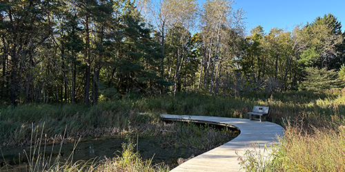

Let's get you on the trails!

Recommended Hikes
First Time Visitor
Take the hiking trail to Mystery Lake and then visit our Observation Tower. The tower provides a beautiful view of the nature preserve and Lake Michigan. Mystery Lake has a boardwalk that lets you get close to the frogs and turtles, and is wheelchair accessible.
Wheelchair Accessible Hike
HIke a portion of our Central Wetlands Loop. Take the Green Tree Accessible Trail around the tower and connect to the wheelchair accessible hiking trail made of crushed gravel that leads to the Mystery Lake boardwalk. You’ll pass through woods, have the chance to see beautiful ephemeral flowers in spring, and end up at Mystery Lake with an up-close look at frogs, turtles, muskrats, waterlilies, and you may see native birds like Green Herons, Baltimore Orioles, and Tree Swallows. Cross the road and take our Gateway Trail to complete your loop to the parking lot.
Birding Hikes
There is no wrong way to go if you’re a birdwatcher! We have a variety of habitats on the land, so different species can be found all over the property. A good route to start with is swinging by Mystery Lake, taking the paved path down to Lake Michigan, and then walking back up to the building by following the North Lake Terrace trail. During spring migration, this route should give a great variety of birds, including many warbler species.